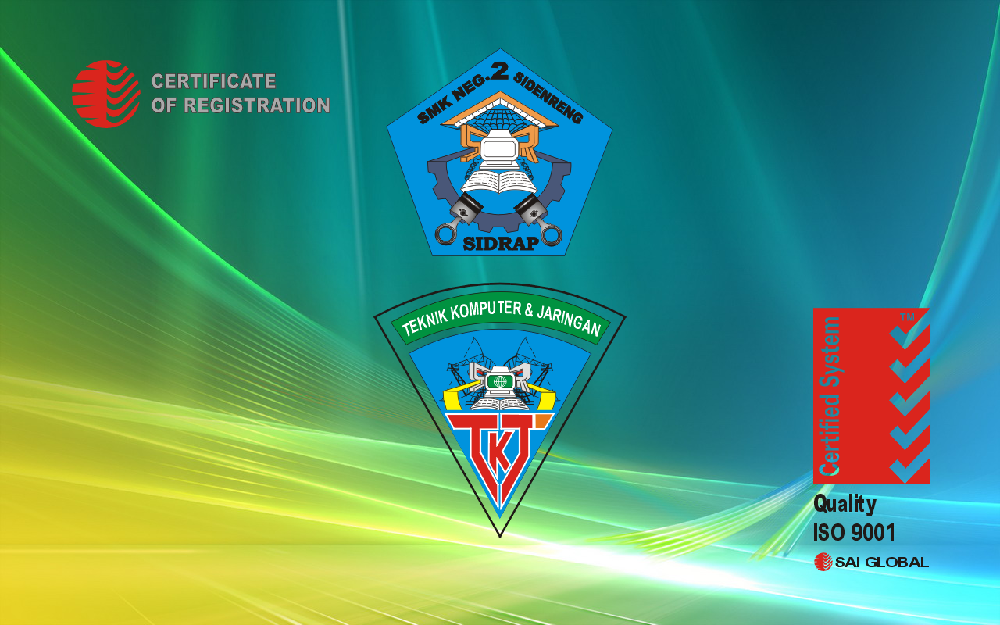

Riwayat Pendidikan

Ini adalah riwayat pendidikan saya. saya pernah bersekolah di TK Aisyah Rappang => SDN 2 Rappang => MTs YMPI Rappng => SMKN 2 Sidenreng Jurusan TKJ (Teknik Komputer Dan Jaringan) dan pernah PRAKERIN Di CV Metronix Makassar Utama di Sulawesi Selatan. Dan sekarang saya menempuh pendidikan di Politeknik POS Indonesia Jurusan Teknik Informatika Diploma IV, Jurusan IT saya ambil karena merupakan lanjutan dari jurusan TKJ yang pernah saya ambil di SMK.